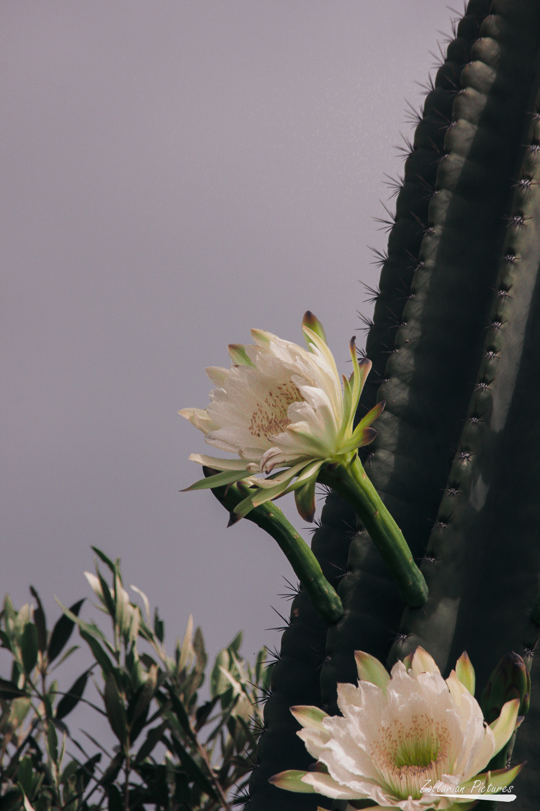

Standing just 8 meters away from a majestic rhinoceros, I felt a surge of
excitement and awe. Armed with my Canon M50 Mark II paired with a Sigma DG
150-500 lens, I carefully framed the shot, ensuring every detail of the
magnificent creature was captured in crisp clarity. As I adjusted the settings
on my camera, the rhino's sheer presence commanded respect, yet its gentle
demeanor seemed to invite me closer. With each click of the shutter,
I immortalized the moment, capturing the raw power and grace of one of
nature's most iconic animals. The experience of photographing the rhino
at such close proximity was not just about capturing an image; it was a
profound connection with the untamed beauty of the natural world.

Desert Bloom: Capturing Nature's Resilience
Exploring a rugged landscape, I stumbled upon a wild cactus flower, its
vibrant colors standing out against the backdrop of rocky terrain. Armed
with my Canon M50 Mark II and Sigma DG 150-500 lens, I approached the flower
cautiously, marveling at its unexpected beauty in such a harsh environment.
With the camera in hand, I adjusted the settings to capture the intricate
details of the delicate petals and the subtle nuances of light playing upon
them. Each snap of the shutter immortalized the ephemeral beauty of the
cactus flower, a testament to nature's ability to thrive in even the most
unlikely places. As I gazed through the lens, I felt a sense of wonder and
gratitude for the chance to capture such a fleeting moment of natural splendor.